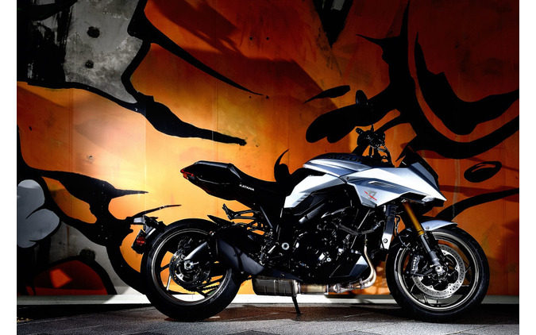

絶対に侵すことのできないカタナのアイデンティティ
スズキ KATANA（カタナ）2018年のインターモト（ドイツ）において、スズキはその歴史を語る上で欠かせない、ひとつのブランドを復活させた。新しく生まれ変わった「KATANA（カタナ）」だ。1981年秋に発売された「GSX1100S KATANA」をオリジナルとし、しかし単にネオクラシックブームに乗じたものではない。純然たるスポーツバイクとして、それは送り出された。
スズキ KATANA（カタナ）乗車時に伝わってくる手応えは「柔」か「剛」で言えば、明確に「剛」であり、頑強なフレームと締まったサスペンションが高荷重を求めてくる。ハンドリングは切れ味鋭く仕立てられ、エンジンもまた、それに見合うシャープさで吹け上がっていく。大らかに旋回し、じっくりとエンジン回転を押し上げていくオリジナルとは対照的なキャラクターと言ってよく、新しいカタナ像を提供しようとする開発陣の意気が感じられた。
スズキ KATANA（カタナ）スタイリングも同様だ。オリジナルがロー＆ロングの伸びやかなシルエットだったのに対し、新型は凝縮されたデフォルメ感を持つ。これもまた対照的なアプローチだったにもかかわらず、ヘッドライト周辺の造形や燃料タンクのエッジなどは、カタナ以外の何者でもない。それらは、他メーカーが絶対に侵すことのできないアイデンティティとして、広く認知されたものだ。
マイナーチェンジにより電子デバイスをアップデート
スズキ KATANA（カタナ）さて、そんなカタナがマイナーチェンジを受け、2022年2月からリリースが始まっている。見た目からそれを伺い知ることは難しいものの、電子デバイスを中心に大幅なアップデートを敢行。第2世代へと進化した新カタナのパフォーマンスをストリートで体感することができた。
スズキ KATANA（カタナ）主な改良ポイントは次の通りだ。まず、スロットルがライドバイワイヤ方式に変更された。これにともなって、スロットルレスポンスを切り替えられる「スズキドライブモードセレクター」を新たに採用。従来3段階＋OFFだったトラクションコントロールの介入レベルが5段階＋OFFになって制御が緻密になった他、クラッチレバーの操作なしでギヤのアップとダウンが可能なクイックシフトシステムを装備。また、ハンドルバーがラバーマウント化されるなど、ユーザビリティ向上のための改良が随所に盛り込まれた。
自由自在に振り回せる一体感のあるライディングポジション
 スズキ KATANA（カタナ）
スズキ KATANA（カタナ）ライディングポジションは、ビッグバイクの中ではかなりコンパクトな部類に入る。手前に引かれた幅広のアップハンドルを備えていること、座面とハンドルとの距離が短いこと、シート高は825mmで足つき性がいいことなど、好条件がいくつもあり、乗車姿勢は安楽そのもの。乗降性にも優れ、緊張を強いられる場面はない。
主要なコンポーネントを共有するGSX-S1000のハンドル切れ角が左右それぞれ31°あるのに対し、カタナは29°とやや狭くなっている。したがって、最小回転半径はわずかに大きくなるのだが、ユーティリティを損なうほどではない。そのぶん、カタナらしさの象徴でもある、フロントカウルから燃料タンクに至る造形の再現度が高まっているのだから充分許容できるのではないだろうか。
スズキ KATANA（カタナ）以前、このモデル誕生のきっかけを作ったイタリア人デザイナー、ロドルフォ・フラスコーリ氏が「ポジションはスーパーモタードのような自由度の高さを狙った」と語ってくれたが、実際その通り。そこには股下で自由自在に振り回せるような一体感があり、そこにもまた、新しい世代のカタナに新しい価値を与えようとする前向きさが感じられる。
どこからでも鋭いキックを繰り出せるスロットルレスポンス
さて、街中を走り出す。マイナーチェンジ前と後で最も顕著に感じられる違いがスロットルレスポンスだ。最高出力とその発生回転数は、148PS／10000rpmから150PS／11000rpmへ向上しているものの、その領域ではなく、むしろ3000～5000rpmといった常用域でのこと。右手の動きにエンジンは間髪入れずに反応し、いつでもどこでも鋭いキック力を引き出すことができる。
スズキ KATANA（カタナ）以前のモデルは、スロットル微開域でのパワーを疑似的に抑えるセットアップが施されていた。スロットルとスロットルボディをつなぐワイヤーにひと工夫加え、最初は穏やかにパワーが立ち上がり、中高回転に達すると徐々にダイレクト感が増す可変プーリーを採用していたからだ。
しかしながら、今回それが電子制御スロットルに取って代わられたことにより、自由度が格段に向上。スズキ謹製とも言える、998ccの水冷4ストローク並列4気筒エンジンのポテンシャルが解放された恰好だ。もっとも、そう書くと手強そうな、さらには扱い難そうな印象を与えそうだが、それこそが電子制御化のメリットに他ならない。
スズキ KATANA（カタナ）既述のスズキドライブモードセレクターには、A（アクティブ）／B（ベーシック）／C（コンフォート）という3パターンのエンジンマップが設定されており、これをボタンひとつで変更することができる。その名称の通り、確かにAを選択すると過渡特性が俄然はつらつとしたものになる。手首のひねりをわずかに大きくするだけでタコメーターのバーグラフは跳ね上がり、迫力のある吸気音と排気音が連動。ちょっと獰猛な気さえするほどだ。
スズキ KATANA（カタナ）テンションを上げて走りたい時、ワインディングを爽快に駆け抜けたい時には、これを堪能できる一方、ゆったりと流したい時もある。そうした場面では、BもしくはCを選べば乗り手の気分に応えてくれる。レスポンスがグッと抑えられ、とりわけCでは終始穏やかさを感じつつ、操ることができるはずだ。
路面からのフィードバックやハンドリングがより上質に
その穏やかさをサポートしてくれているのが、新しくなったハンドルの取付方法だ。ダイレクトにボルト留めされていた部分が、ラバーを介してのフローティングマウントになり、手に伝わる微振動が軽減。これは速度域や回転域の高低にかかわらず体感できる恩恵であり、さりげないおもてなしが光る。
スズキ KATANA（カタナ）また、これは特にアナウンスされていないのだが、これまでのカタナと比較すると、路面からのフィードバックがソフトになっている点が好印象だ。以前ならビシッと突き上げてくるような凹凸がいなされ、端的に表現すると全体的に乗り心地がいい。スロットルを開けた時のトラクションが分かりやすく、ブレーキング時にはフロントフォークがスムーズにストローク。接地感やハンドリングがより上質なものになっている。
また、操作系に関しては、クイックシフトシステムの貢献度は外せない。その反応スピードは適切なもので、シフトペダルをきちんと踏み込み、またはかき上げる力を受けてからカツンカツンと正確にギヤが切り換わっていく。スーパースポーツのようにタイムラグが極端に少ないと、日常使いでは気ぜわしい。安楽でありながらオートマチック過ぎず、ギヤチェンジを楽しむ感覚が確保されている。
大人のバイク趣味にちょうどいい存在となりうる
スズキ KATANA（カタナ）新しいカタナに投入された追加装備やリセッティングは、誰もが体感できるものであり、そのどれもがプラス方向に機能。150PSの最高出力と215kgの車重を手の内に収めるための改良と言ってもよく、スキルを選ぶことなく、スポーツライディングに没頭することができる。「ウインドプロテクションや航続距離、積載性を重視するなら、GSX-S1000GTを筆頭とする他のモデルをご用意しておりますので」という割り切りが清々しい。
もしも土日が休みの環境だとしても、バイクを楽しめるのはその内のどちらか。あるいは、どちらかの半日だけ、という人は案外多い。街を抜け出して近郊のワインディングでひと時を楽しみ、コーヒーを一杯飲んで帰路に着く。たとえばそんな、週末カフェレーサー的な時間の過ごし方だ。
スズキ KATANA（カタナ）そうした場面では、カタナのような存在がちょうどいい。200PS級のスーパースポーツだと持て余し、ありとあらゆる快適装備を持つクルーザーでは荷が重い。思い立った時にすぐさま跨って走り出せる、軽やかなフットワークがこのモデルの魅力だからだ。もちろん、扱いやすく、コンパクトなモデルは他にもあるが、大人としては走りの質だけではなく、それを手に入れるまでのストーリーや蘊蓄も欲しい。そんな時、スズキの大きなアイコンである「KATANA」の名が拠りどころになる。オリジナルがそうであったように、新生カタナもまた、オーナーに寄り添って長く愛される存在になるのではないだろうか。
スズキ KATANA（カタナ）の公式ページはこちら■5つ星評価
スズキ KATANA（カタナ）
パワーソース：★★★★★
フットワーク：★★★★
コンフォート：★★★★
足着き：★★★★
オススメ度：★★★★
伊丹孝裕｜モーターサイクルジャーナリスト
1971年京都生まれ。1998年にネコ・パブリッシングへ入社。2005年、同社発刊の2輪専門誌『クラブマン』の編集長に就任し、2007年に退社。以後、フリーランスのライターとして、2輪と4輪媒体を中心に執筆を行っている。レーシングライダーとしても活動し、これまでマン島TTやパイクスピーク・インターナショナル・ヒルクライム、鈴鹿8時間耐久ロードレースといった国内外のレースに参戦。サーキット走行会や試乗会ではインストラクターも務めている。